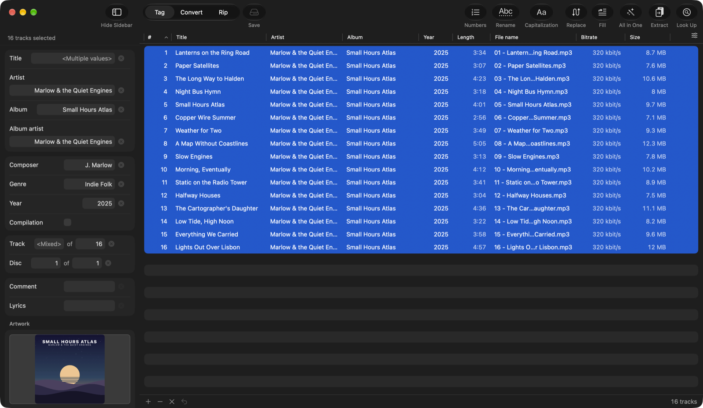
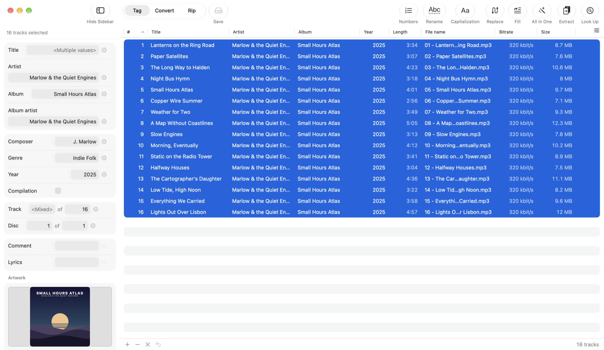
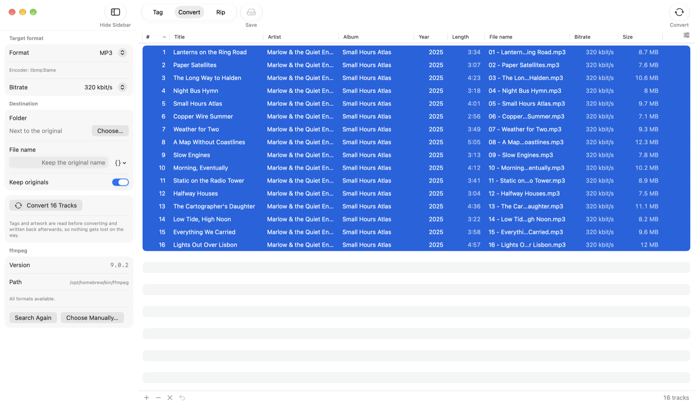
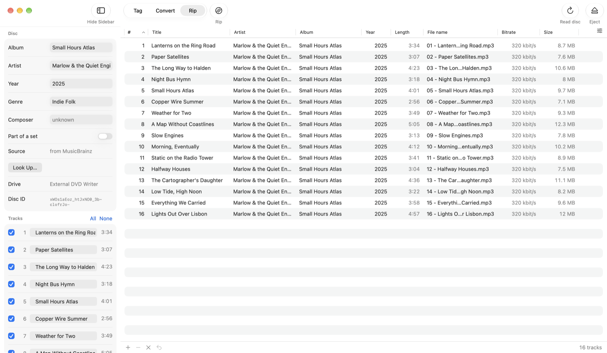
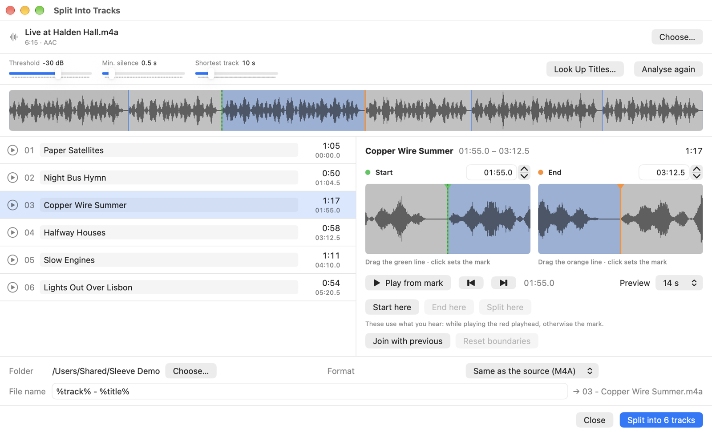

An audio tagger for the Mac that also converts, rips CDs and splits long recordings.
Edit the tags of a whole album at once, look it up on MusicBrainz or Discogs, convert without losing a single tag, rip CDs in secure mode, burn and copy discs, and cut an album video or a vinyl side into tracks. Free, open source, no account, no tracking.
macOS 14 Sonoma or later · Apple Silicon · GPLv3

Tag, Convert and Rip share the same list of files — rip a CD, tag what came out, convert it, without importing anything twice. Splitting long recordings has a window of its own.
One track or a whole album: fields that differ show <Multiple values>. Numbering, capitalization, find and replace, filling a field from other tags or the file name, renaming and reading tags out of file names — every batch step with a preview. Look Up Album fetches tags and cover from MusicBrainz or Discogs.

MP3, AAC, ALAC, FLAC, Opus, Vorbis, WAV and AIFF with ffmpeg. Sleeve reads the tags first and writes them back itself, cover included — the album artist and the disc number survive the trip, which generic converters tend to lose.

Reads audio CDs directly: burst or secure mode, read offset, C2 error pointers, an optional second pass and a log. CD-TEXT, ISRC and the MusicBrainz disc ID fill in the tags. The File menu adds a gapless image of the whole disc, burning it back, and a one-button 1:1 copy.

An album video, a vinyl side or a live set, cut into tracks without re-encoding. Silence detection finds the boundaries, two magnifiers set them exactly, and the titles come from MusicBrainz, Discogs or a track list pasted from the video description.

A field is only written if you touched it. Select twelve tracks, change the album, and every other field stays exactly as it was — an empty-looking field is never written as empty by accident. Nothing reaches your files until you save, and the last save can be undone.
A few practical details before you download.
English, German and Spanish, picked from your system language. Light and dark follow the system too.
Tagging and ripping to WAV need nothing extra. Converting, other rip formats and splitting use ffmpeg from Homebrew — Sleeve finds it, never bundles it.
MusicBrainz works without an account. For Discogs you add your own token, which is kept in the keychain.
MP3, AAC, ALAC, FLAC, Ogg Vorbis, Opus, WAV and AIFF, read and written with TagLib.
A burned image and a copied CD both read back byte for byte identical to their source. Copy-protected discs are refused, not worked around.
Everything runs on your Mac. The network is only used when you look something up.
Sleeve is free software under the GNU GPL v3. If it saved you some hassle, you can leave a tip.
Buy me a coffee